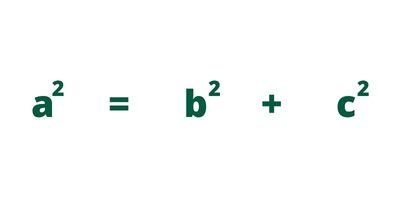

Teorema de Pitágoras
O teorema de Pitágoras é uma fórmula que nos permite relacionar as medidas dos lados de um triângulo retângulo. Nessa figura geométrica, os lados perpendiculares são conhecidos como catetos, e o lado oposto ao ângulo de 90º é conhecido como hipotenusa. Esse teorema mostra que a soma do quadrado dos catetos é sempre igual ao quadrado da hipotenusa. Ele é muito importante para o estudo da Matemática, auxiliando no desenvolvimento da geometria. Foi por meio dele que os matemáticos buscaram compreender melhor os números irracionais.
Para a aplicação do teorema de Pitágoras, é necessário compreender as nomenclaturas dos lados de um triângulo retângulo. O maior lado do triângulo fica sempre oposto ao maior ângulo, que é o ângulo de 90°. Esse lado recebe o nome de hipotenusa e será representado aqui pela letra a.
O teorema de Pitágoras afirma que é válida a relação a seguir:
Assim, podemos dizer que o quadrado da medida da hipotenusa é igual à soma dos quadrados das medidas dos catetos.
Calculadora de Hipotenusa
Calculadora
0